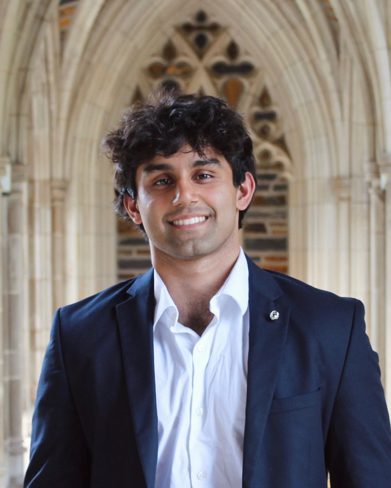
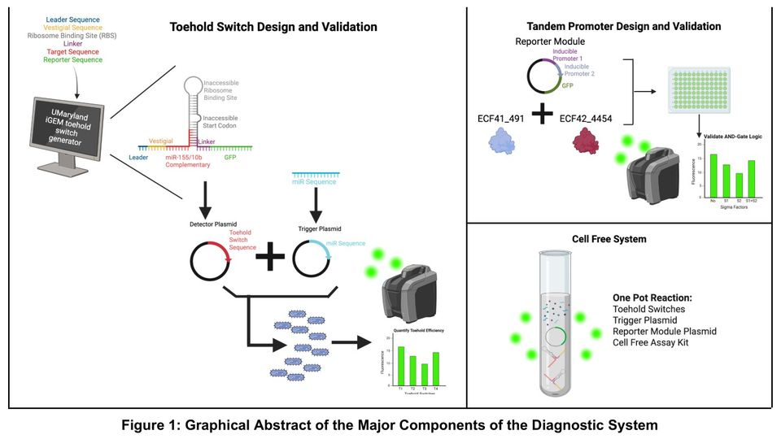
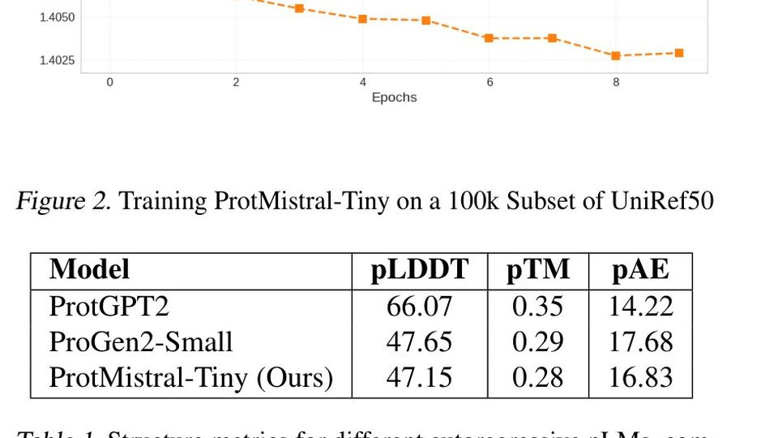
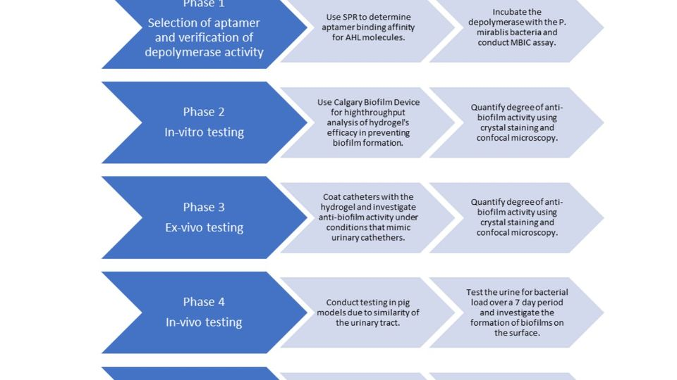
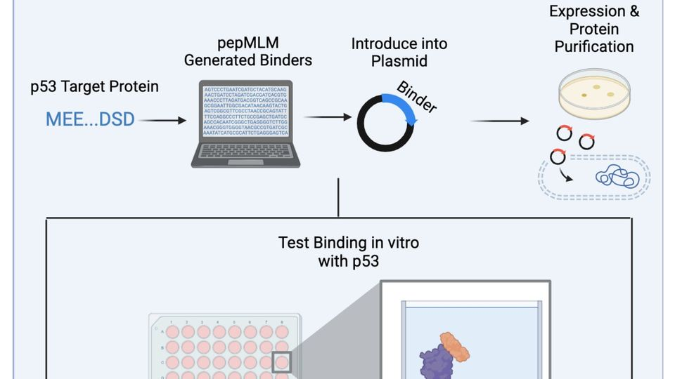
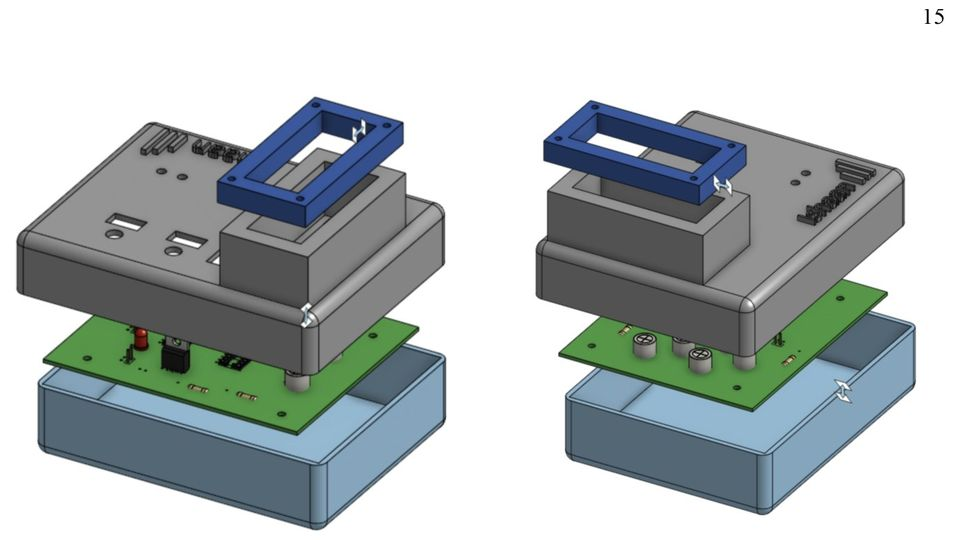
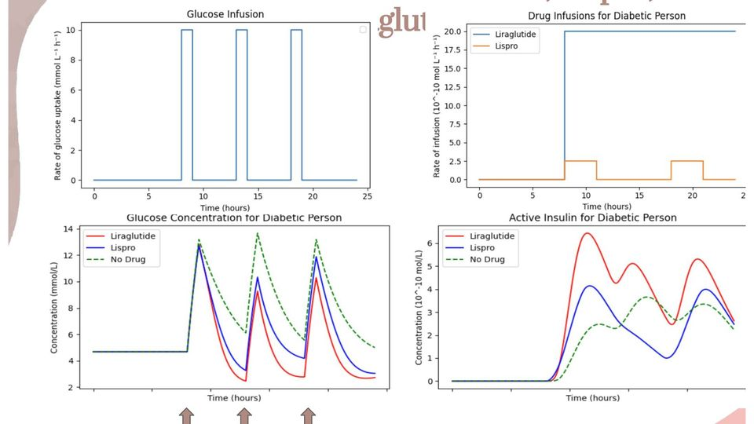
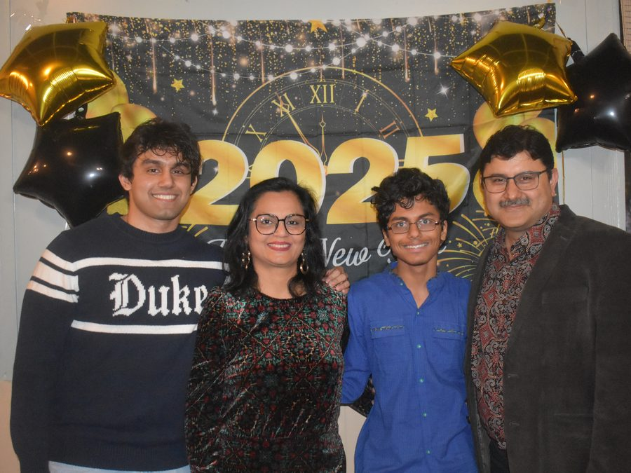

Biomedical Engineering + Computer Science + Finance · New York, NY
Ishaan Mehrotra
Hi, I'm Ishaan. I'm studying biomedical engineering and computer science at Duke, and I'm interested in the intersection of technology, healthcare and business.
I've worked on healthcare analytics at CVS Health's Oak Street Health, built and tested AI models for protein design, and evaluated early-stage healthcare startups. I'm particularly interested in product strategy, operations and deployments: figuring out how to take complex technologies, solve real problems with them, and make them work in practice.
I've always admired startups and the people building them, especially the process of turning an idea into a product that people actually want to use. I'm drawn to roles where I can work closely with customers, understand their problems, and help translate technology into practical solutions.
I'm currently exploring opportunities in product, deployment strategy and operations at technology and healthcare companies, as well as investing roles in healthcare venture capital.
I think some of the most interesting work happens in the gap between what technology is capable of and what actually gets implemented. That's where I want to be.
I love to chat about anything and everything, so please reach out and connect. Happy to grab a coffee, and always happy to learn something new.
- B.S.E. Biomedical Engineering '25
- B.S. Computer Science '25
- M.S.E. Biomedical Engineering '27
- Corporate Strategy @ CVS Health

Education
Duke University
M.S.E. Biomedical Engineering
Expected May 2027 · Durham, NC
B.S.E. Biomedical Engineering · B.S. Computer Science · Minor in Chemistry
August 2021 – May 2025
Coursework: Data Science · Databases · Data Structures · Algorithms · Differential Equations · Generative AI in Protein Design · AI in BME · Quantitative Physiology · Biostatistics · Cellular & Molecular Engineering · Drug Delivery · Biotech Design · Medical Design Prototyping · Asset Pricing & Risk Management · Business Fundamentals for Engineers · Management of High Tech Industries · Customer Empathy & Brand Design · Innovation & Entrepreneurship
- RA Capital Management NPLB Fellow
- Duke Investor Training Program
- Duke I&E VC Foundations
About
Why healthcare, and how I got here
Healthcare has always been personal for me. My brothers were born prematurely. One passed away shortly after birth, and my surviving brother is healthy today. Growing up around hospitals, with two parents who are researchers, made me want to understand how better science could change what families go through.
At CVS Health's Oak Street Health, the work I am proudest of is turning a finding in patient data into a change in care delivery. I found patients with unresolved blood-pressure care gaps who already owned home cuffs, which meant we could reach them without asking them to come in for another visit. I helped build an outreach workflow across medical assistants, pharmacists and nurses, with readings captured in Epic. Getting the clinical and operational teams aligned meant understanding what each one needed and making the process practical for the people actually using it. More patients finished their rechecks, which is the part that made it worth doing.
At Duke, I helped build and evaluate a protein language model, including fine-tuning ESM-2 and developing our evaluation suite. We found that improving structure-confidence scores could hide weaker predictions of thermostability. I had to question a result I wanted to believe. Alongside that, I experimentally tested AI-designed peptide binders in the Chatterjee Lab. Having worked on both the model and the bench validation is something I am glad about. It taught me to ask what an encouraging result actually establishes, and what still needs testing.
I have also spent time on the investing side, through 1824 Health Ventures and the South Carolina Health Innovation Fund. At 1824 I supported biotech diligence and noticed the team was tracking portfolio updates by hand, so I built an AI-enabled tracker that brought clinical milestones, company filings and financing events into one place.
At thirteen I founded CharlestonKix, because I thought access to soccer coaching depended too much on what a family could afford. Over five years I raised more than $6,000, secured ten sponsors and helped run over 100 lessons. Getting adults to take the idea seriously took persistence. I heard nothing back from a lot of businesses, so I asked the next one. Starting it mattered to me. Keeping it running for years mattered more.
I have run into that same persistence in very different places: winning a U14 national championship with my soccer team, earning a second-degree black belt, earning first chair violin in my middle school's competitive chamber orchestra, debugging a biological model, or asking one more business to sponsor CharlestonKix. It has shaped what I look for in founders. Competitiveness, curiosity, and the conviction to keep going through uncertainty.
What I am looking for: product, operations, strategy or deployment roles at a tech startup, health tech, AI in healthcare, and healthcare VC.
Experience
Where I've worked
-
Business Analyst, Population HealthAug 2025 – present
CVS Health · Oak Street Health · Chicago (remote)
- Built executive dashboards joining clinical, payer claims and financial data across 250,000+ patients.
- Sized $132M+ of annual respiratory cost exposure and $171 of net savings per vaccine into the business case for the 2026–27 vaccine campaign, which ran through flu standing orders and Epic gap prompts.
- Ranked 26 payer-markets by Medicare Stars penalty exposure to pick the top three, then turned blood-pressure and A1c gaps into a per-clinic run rate of about four closures per week per center in PowerQuery and BigQuery.
- Found 264 unscheduled patients who already owned home blood-pressure cuffs, and built a four-week pilot around that: patients routed by tier to a medical assistant, pharmacist or nurse, with readings logged into discrete Epic fields. Rechecks went up 2.6× year over year.
- Advocated for Abridge AI governance to expand contract scope from RCM software and HCC capture to clinical decision support across pre-, intra- and post-visit workflows: lab follow-up next steps, differentials, medication titration. Benchmarked Epic-native AI and OpenEvidence for provider workflows.
- Supported org-wide Google Gemini adoption through provider onboarding and implementation walkthroughs.
- SQL
- BigQuery
- PowerQuery
- Epic
- Payer Claims
- Medicare Stars
- Workflow Design
-
AI & GTM InternAug 2026 – present
Shiftwave · San Francisco (remote)
- Customer discovery, market sizing and unit economics across soccer, golf and Formula 1 for a nervous-system recovery device, to recommend which vertical to expand into.
- Built an AI-assisted pipeline that scores and ranks target organizations on fit and deployment readiness.
- Customer Discovery
- Market Sizing
- Unit Economics
- GTM Strategy
-
Venture Capital InternMay – Aug 2026
1824 Health Ventures · South Carolina Health Innovation Fund
- Diligence on seed-stage biotech across trial readouts, regulatory milestones, IP and financing need.
- The team was tracking portfolio companies through manual check-ins, so I built an AI-enabled tracker pulling filings, financings and company events into one view. The risks I had been pressure-testing in memos became the tracker's criteria, so diligence and monitoring stopped being two separate frameworks.
- Due Diligence
- Biotech
- Portfolio Monitoring
- Investment Memos
-
Strategy & Data Analytics InternJan – Jul 2025
Lipo-ImmunoTech · Phase I/II biotechnology startup
- Commercialization strategy and clinical development pathways for a ceramide-based cancer immunotherapy, built from preclinical efficacy data, regulatory feasibility and market dynamics.
- Competitive analysis across immuno-oncology and cell therapy pipelines in Excel and Power BI, identifying a projected TAM above $500M.
- Worked with biopharma executives, clinicians and scientists on fundraising, cap table review and partnerships tied to NCI/STTR-funded programs. Most of that was translating cGMP manufacturing into something an investor could evaluate without a biology degree.
- Market Analysis
- Financial Modeling
- Regulatory Strategy
- Power BI
-
Translational Research InternAug 2024 – May 2025
Programmable Biology Group · Chatterjee Lab, Duke
- Experimental validation of AI-designed peptide binders from PepMLM and moPPIt v3, assessing binding affinity and translational viability for proteome editing, including benchmarking around 70 candidates.
- Used SQL and R to refine the design strategy, which drove a 40% increase in high-affinity binders.
- Protein Design
- ELISA
- Purification
- SQL
- R
-
Product LeadAug 2024 – Jun 2025
Bass Connections · Duke University School of Medicine
- Led a six-person team building a VR and haptic feedback platform for interventional radiology training at Duke Health, integrating force sensing and Unity environments over VIVE OpenXR, Raspberry Pi and WebSocket pipelines.
- Best Interactive Display at the 2025 Fortin Foundation Bass Connections showcase.
- Unity
- Haptics
- Team Leadership
- Hardware Integration
-
Project ManagerAug 2023 – Jun 2024
Duke GEMINI Research Center
- Owned product strategy for a Flutter-based clinical decision tool that screens for alcohol use disorder, shipped across three international markets and five languages.
- Psychometric modeling and behavioral analytics improved risk stratification accuracy by 85% and drove a 30% increase in identification.
- Product Strategy
- Flutter
- Localization
- Stakeholder Interviews
-
Product & User Research AnalystJul 2022 – Jun 2023
Duke Social Science Research Institute · Open Design Studio
- Thirty-plus interviews with students, patients, clinicians and public health leaders to work out what a tool connecting healthcare nonprofits with technical talent would need to do.
- Wrote the requirements doc, tested Figma prototypes, and co-built a for-credit course that brought in 100+ students and produced up to 15 health policy project proposals.
- User Research
- PRD
- Figma
- Program Design
-
Clinical Systems Strategy InternMay – Aug 2022
MUSC Health & Cell and Tissue Systems Inc. · Charleston, SC
- Two research-driven initiatives on clinical-grade tissue engineering workflows and the usability of transplant material.
- Improved corneal cross-linking system performance by 40% using second-harmonic-generation-guided two-photon techniques, ran root-cause analyses on the technical bottlenecks, and cut sample prep time by 30% by reworking the workflow.
- Analysed post-mortem effects in cryopreserved aortic valves, which expanded usable donor material by 20% and fed into the QA strategy for tissue banking. Translated the findings into recommendations for tissue processing, lifecycle documentation and regulatory compliance.
- Separately, contributed to a chairside platform for measuring temporomandibular joint biomechanics, work that began before college and is now a preprint I am a co-author on.
- Tissue Engineering
- Two-Photon Imaging
- Root-Cause Analysis
- QA Strategy
- Regulatory Compliance
Featured work
Things I've built and tested
Six projects with full case studies. Each one covers the problem, what I did, what came out of it, and what did not work. Several of these failed, and I kept them in for that reason.
- Filter
-

01 · Diagnostics · Senior design A cancer test that waits for two signals Any one blood biomarker is noisy. We built RNA switches that only fire when two breast-cancer microRNAs show up together. Read the case study -

02 · Applied AI · Evaluation A tiny protein model that matched a much bigger one We trained a protein model about 10,000 times smaller than its baseline in three GPU hours. The useful finding came from the evaluation suite, not the model. Read the case study -

03 · Device strategy · Commercialization A catheter coating designed around who pays for the infection Medicare stopped paying for preventable catheter infections in 2008, which put $876 to $10,197 per case on the hospital. We started from that and worked back to a device spec. Read the case study -

04 · AI to wet lab An AI-designed peptide that did not bind p53 has no stable pocket to design a drug against, so we used a sequence model instead. Then we made the peptide and ran it against real protein. Read the case study -

05 · Hardware · Solo build A handheld device, built alone and tested against 22 specs Requirements, schematic, PCB, enclosure, firmware and assembly, all on my own. Then I tested it against the words I wrote before building it. Read the case study -

06 · Modeling · Pharmacoeconomics Two diabetes drugs, simulated and then priced The standard glucose model cannot tell a GLP-1 agonist from insulin, so we added the compartments it was missing. Then we put the monthly cost next to the curve. Read the case study
Publication
A chairside platform for measuring jaw joint mechanics
One of fifteen authors on a bioRxiv preprint out of the Clemson–MUSC Joint Bioengineering Program. The project started before I went to college.
A Chairside Multimodal Platform for Temporomandibular Joint Biomechanical Assessment: Technical Evaluation and Illustrative Application
Jaw joint problems are assessed from three things at once: how the jaw moves, how hard it bites, and what the chewing muscles are doing. The instruments that measure those three signals are normally separate boxes with separate software, so nobody gets them synchronised in the time a real dental appointment allows. This platform captures all of them together, plus acoustics and event timing, in about fifteen minutes of setup and fifteen of collection, and exports a dataset a computational model can use directly.
Motion capture came in at roughly 0.04 mm static and 0.12 mm dynamic error. Bite force sensors were linear at R² = 0.998. The paper then runs one orthognathic surgery patient before and after the operation to show the data supports kinematic analysis, bite force control assessment and an estimate of stress on the joint disc.
What I did, and what I did not. The CRediT statement in the paper lists me under Investigation and Writing – review & editing. The conceptualization, the software, the formal analysis and the original draft belong to other authors, and the three co-first authors are marked as having contributed equally. I was eighth of fifteen.
This is a preprint. bioRxiv has not peer reviewed it, and I will not describe it as a peer-reviewed publication until it is one.
Skills
Tools and capabilities
Data and Programming
- SQL
- Python
- R
- Java
- MATLAB
- BigQuery
- PowerQuery
- Excel (Advanced)
- Power BI
- Tableau
- Google Cloud Platform
- GitHub
AI and Machine Learning
- PyTorch
- HuggingFace
- ESM-2 Fine-Tuning
- Model Evaluation Design
- pLDDT / pTM / pAE
- AlphaFold3
- PepMLM
- LLM Workflows
- Claude Code
- AI Agent Tooling
Product
- PRDs and MRDs
- Roadmapping
- User Interviews
- Customer Discovery
- Figma Prototyping
- A/B Testing
- Product Analytics
- Jira
- Confluence
- Trello
Investing and Strategy
- Due Diligence
- Market Sizing
- Financial Modeling
- Valuation
- Competitive Analysis
- Sourcing
- Cap Table Review
- PitchBook
- Bloomberg
- Business Cases
Healthcare
- Epic Workflows
- Payer Claims
- Medicare Stars
- Care Gap Closure
- Population Health
- Clinical Trial Design
- FDA Regulatory Pathways
- IND and PMA
- cGMP
- Patent Landscaping
Lab and Engineering
- Plasmid Design
- Cloning
- ELISA and SPR
- Western Blot
- PCR and qPCR
- Cell Culture
- Benchling
- KiCad
- Fusion CAD
- 3D Printing
- Arduino / Embedded C
- Unity
How I Work
- Data-Driven Thinking
- Cross-Functional Collaboration
- Go-to-Market Strategy
- Translating Technical Work for Non-Technical Teams
- Stakeholder Management
- Structured Problem Solving
- Executive Presentation
- Ownership under Ambiguity
- Honest Reporting of Negative Results
Languages
- English (Native)
- Hindi (Native)
- Spanish (Intermediate)
Leadership & community
Things I started or ran
-
Founder & CEODec 2017 – Aug 2023
CharlestonKix · Charleston, SC
- Started a youth soccer nonprofit at thirteen because organized soccer cost more than a lot of families near me could pay.
- Raised more than $6,000, signed ten sponsors and ran over 100 lessons for 32 kids across five years.
- Fundraising
- Sponsorship
- Program Operations
-
Vice President of Strategy & PartnershipsFeb 2022 – May 2023
Healthy Hands Initiative · Duke 501(c)(3) chapter
- Secured 15+ external partnerships for a clean water venture addressing preventable disease in Northeast India.
- Raised $50,000 in competitive non-dilutive grant funding and designed a hybrid public-private funding model so the program would not depend on one grant cycle.
- Grant Writing
- Partnerships
- Funding Models
-
Fitness Trainer & MentorJan 2024 – 2025
Bull City Fit · Durham, NC
- Worked with 60+ children in underserved communities on a dance-based fitness curriculum and healthier eating habits.
- Curriculum Design
- Mentoring
-
Pro-bono consultant & project manager2022 – 2024
Duke Consulting Club
- Led the GEMINI Research Center engagement that shipped an alcohol use disorder screening tool across three international markets.
- Client Management
- Project Delivery
Personal
More about me and my personal life
Family is at the heart of everything I do. It is the reason I work on healthcare at all, and it is what I think about when a project gets hard. Both my parents are researchers, so I grew up around the work before I ever chose it.

Soccer has always been the constant. I played through a U14 national championship and still play every chance I get. When I am not playing, I am probably watching the Premier League or Champions League (huge Real Madrid and England fan). Outside of soccer, I love lifting, am getting into running, and almost always have a house music DJ set playing. I also have a second-degree black belt, played first-chair violin in my middle school’s competitive chamber orchestra, and, surprisingly to most people, spent some time doing hip-hop dance in college.
Archive
Everything else
Sixteen more projects from four years of coursework and research. Most are downloadable.
- Filter
Therapeutic and Diagnostic Design
A plasmid pairing a designed peptide binder with an E3 ubiquitin ligase domain, delivered by lipid nanoparticle, to degrade the receptor overexpressed about 100-fold in endometriotic lesions. Includes a priced competitive table against Orilissa, Linzagolix, NSAIDs and surgery, a patent landscape and a five-phase test plan. PDF
My own proposal for a three-domain chimeric protein that recruits the cell's existing degradation machinery to mutant huntingtin, with exosome delivery across the blood-brain barrier. PDF
Cloned and validated a tau transgene into an AAV vector, measured a titer of 1.5 million viral genomes per microliter by qPCR, and imaged expression at two multiplicities of infection. The Western blot came back inconclusive and the discussion works through why. PDF
AI and Computational Modeling
Two companion papers to the protein language model work: multi-model embeddings for signal peptide classification and disorder asphericity regression, then importance masking with a multi-objective loss. Embeddings PDF · Asphericity PDF · Masking PDF
Low-pass, high-pass, band-pass and band-stop filters applied to real brain data in Python, plus a simulated soft-tissue phantom to test how X-ray fluence and filter choice change whether a lesion is visible at all. PDF
The one project here with nothing to do with healthcare. Which performance metrics actually predict a player's points next season. PDF
Pharmacokinetic model comparing receptor coverage between a daily pill and a monthly injection, and what a missed dose does to each. PDF
Modeled fluid in the alveoli as an increase in diffusion distance, then tracked what that does to oxygen and carbon dioxide in expired air. PDF
Four solo modeling projects: a physiologically-based pharmacokinetic model across plasma, liver, muscle, kidney and gut; systemic IgG delivery in cylindrical coordinates; small-molecule transport into a metastatic tumor; and receptor-mediated endocytosis at steady state. PBPK · IgG · Tumor · Endocytosis
Devices and Instrumentation
Instrumentation project built with one teammate. Slides
A device combining a differential pressure sensor with acoustic analysis of breathing sounds, so the rate and the character of the breath get measured together. PDF
A low-cost portable anchor so resistance-band exercises work at different heights without a doorframe. Poster
Commercialization and Strategy
Value-based pricing. Hospitals absorb roughly $8,000 per complication, so we worked the complication-rate difference between the two drugs into an argument for what a dose is worth. Slides
Structured debate on where non-viral delivery beats viral vectors and where it does not. Slides
Swimming microalgae in a degradable capsule as a way to hold a drug against the intestinal wall for longer than passive transit allows. Slides
Nothing in the archive matches that filter.
Contact
Let's talk.
Please reach out by email! I love connecting and chatting with new people and talking about absolutely anything.
Ishaan Mehrotra · New York, NY · ishaan.mehrotra@duke.edu